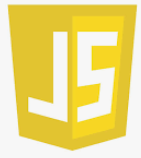

| Ikona | Popis | Funkce |
|---|---|---|
 |
Hypertext Markup Language je v informatice název značkovacího jazyka používaného pro tvorbu webových stránek, které jsou propojeny hypertextovými odkazy.[cite: 14] | Zajišťuje obsah stránky[cite: 14] |
 |
Kaskádové styly je v informatice jazyk pro popis způsobu zobrazení elementů na stránkách napsaných v jazycích HTML, XHTML nebo XML.[cite: 14] | Starají se o vzhled stránky[cite: 14] |
 |
PHP je skriptovací programovací jazyk. Je určený především pro programování dynamických internetových stránek a webových aplikací například ve formátu HTML, XHTML či WML.[cite: 14] | Zajišťuje dynamické stránky[cite: 14] |
 |
JavaScript je multiplatformní, objektově orientovaný, událostmi řízený skriptovací jazyk, jehož autorem je Brendan Eich z někdejší společnosti Netscape.[cite: 14] |